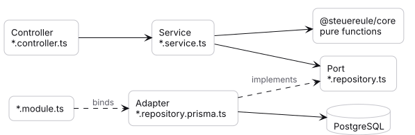
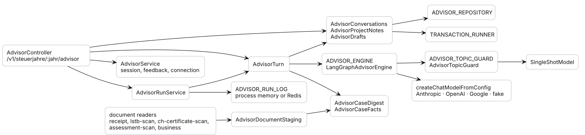

| As of | 2026-11-22 |
| Level | components (C4 level 3), companion to index.html |
| Scope | selected modules under apps/api/src |
For the most important modules this document shows who calls in, which service does the work, which ports it needs and which core functions it calls. It is not a route list: the complete and authoritative list of routes is apps/api/openapi.json, served at /docs at runtime.
Every name here has been checked against the code. Core functions are exports of packages/core/src; tables are models in apps/api/prisma/schema.prisma. Routes are German because the product is; the glossary in index.html §12 explains the terms.
The common pattern

(source: common-pattern.puml)
What holds for every module:
- Identity. Only
UserContextGuardsets the user id of a request. Routes marked@RequiresAccount()reject guests. OnlyHealthController,CapabilitiesController,AuthCapabilitiesController,OAuthDiscoveryController,DeviceControllerand the Stripe webhook route work without the guard. - Arithmetic in the core. No service computes a tax amount itself (ADR-0038).
- Persistence through ports. A service knows its repository as an interface. The Prisma adapter encrypts the fields marked
/// @encryptedin the schema. Not every field is encrypted, seeindex.html§8.2. - Checked boundaries. The database client and external SDKs may be imported only by the files named for them.
apps/api/test/architecture.test.tschecks that (ADR-0102).
In the tables below … stands for the prefix /v1/steuerjahre/:jahr (tax years / year).
1. Cockpit and tax estimate
The cockpit shows the refund range and the open items of a tax year. The tax estimate provides the detailed calculation.
| Cockpit | Tax estimate | |
|---|---|---|
| Entry | CockpitController: GET …/cockpit |
TaxEstimateController: GET …/steuerschaetzung, account required |
| Service | CockpitService |
TaxEstimateService |
| Core | cockpitRangeFromInputs |
taxEstimateEmployee, taxEstimatePensioner, taxEstimateCrossBorder, taxEstimateSelfEmployed, estimateMarriedCouple |
| Ports | TAX_YEAR_REPOSITORY, WAGE_TAX_CERTIFICATE_REPOSITORY, INTERVIEW_ANSWER_REPOSITORY, PROVENANCE_REPOSITORY, PENSION_REPOSITORY, CAPITAL_REPOSITORY, RENTAL_REPOSITORY, CROSS_BORDER_SALARY_STATEMENT_REPOSITORY |
the repositories of the feature modules whose data enters the estimate |
The two services do not call each other. Both read the same feature data and each computes in the core. CockpitService additionally uses SubmissionService and BusinessService; the cockpit is one of the most depended-on modules (25 incoming module edges).
2. Interview
| Entry | InterviewController: GET …/interview, POST …/interview/antworten. Both open to guests. |
| Service | InterviewService |
| Core | ENTRIES (the question catalogue), isValidAnswer, isReachableFor, nextStepFor |
| Ports | INTERVIEW_ANSWER_REPOSITORY |
| Other dependencies | AuditService, LinkService |
| Table | InterviewAnswer; the field value is encrypted |
Answering a question returns the next step and the number of open items. The refund range does not come from here; it comes from the cockpit.
3. Wage tax certificate and commute
| Wage tax certificate | Commute | |
|---|---|---|
| Entry | LstbController: GET …/lstb, PUT …/lstb/:feld, plus a GET and a PUT each for lstb-kirchensteuer, lstb-zeilen, lstb-arbeitgeber, lstb-zuschuesse. LstbScanController: PUT …/lstb for a certificate read as a whole. |
CommuteController: GET …/arbeitsweg, PUT …/arbeitsweg |
| Service | LstbService, LstbScanService |
CommuteService, helpers in commute/ways-to-work.ts |
| Core | wageTaxCertificateStatus, setWageTaxCertificateField |
calculateWorkdays, commuterAllowanceByWay |
| Ports | WAGE_TAX_CERTIFICATE_REPOSITORY, PROVENANCE_REPOSITORY |
COMMUTE_REPOSITORY |
| Tables | Lstb |
Commute |
All routes require an account. The user enters the distance to work; there is no routing service.
4. Cross-border commuters to Switzerland
| Entry | ChSalaryCertificateController: GET …/ch-lohnausweis, PUT …/ch-lohnausweis/:feld, plus PUT for bemerkungen, vorsorge, n-gre, wechselkurs, grenzgaenger |
| Service | ChSalaryCertificateService |
| Core | crossBorderStatus, chItemsAsCoreItems, chfToEur, officialMonthlyRate |
| Ports | CROSS_BORDER_SALARY_STATEMENT_REPOSITORY |
| Table | ChSalaryCertificate |
Decision: ADR-0042, extended by ADR-0072.
5. Pensions, capital income, rental
| Pensions | Capital income | Rental | |
|---|---|---|---|
| Entry | PensionController: GET …/rente, PUT …/rente/art, PUT …/rente/:feld |
CapitalController: GET …/kapital, PUT …/kapital/inhaber, PUT …/kapital/:feld, GET …/kapital/guenstigerpruefung |
RentalController: GET …/vermietung, POST …/vermietung/objekte, PUT …/vermietung/objekte/:objektId/:feld, PUT …/vermietung/objekte/:objektId/adresse |
| Service | PensionService |
CapitalService |
RentalService |
| Core | pensionStatus, pensionAsCoreLineItem |
classifyCapitalDepot, capitalAsCoreLineItem, mostFavourableCheckOnEstimate |
classifyRental, rentalStatus, rentalPropertyFacts |
| Ports | PENSION_REPOSITORY |
CAPITAL_REPOSITORY |
RENTAL_REPOSITORY |
| Tables | Pension |
Capital |
RentalProperty |
6. Unlock and payment
| Entry | UnlockController: GET …/freischaltung and the webhook POST /v1/zahlung/stripe/webhook. The checkout is started by PrintoutController (§7). |
| Service | UnlockService |
| Ports | PAYMENT_PROVIDER (PaymentProvider with createCheckout and verifyEvent), UNLOCK_REPOSITORY |
| Adapter | StripePaymentProvider in unlock/stripe-payment-provider.ts, the only file with the Stripe SDK |
| Table | Unlock |
The webhook is not behind UserContextGuard. It authenticates by the signature that verifyEvent checks. The sequence is in index.html §6.2.
7. Printout
| Entry | PrintoutController: GET …/ausdruck/pruefung, GET …/ausdruck/werte, POST …/ausdruck/checkout, GET …/ausdruck, GET …/ausdruck/vorlage/:formular, plus POST …/ausdruck/async and GET …/ausdruck/jobs/:jobId |
| Services | PrintoutService assembles the values and starts the checkout through UnlockService. PrintoutJobService runs asynchronous jobs. |
| Rendering | the function renderForms in printout/form-renderer.ts, the only file with pdf-lib |
| Data | field positions FIELD_SETS in the same file (2024 and 2025), the forms under apps/api/assets/vordrucke/<year>/, checksums in printout/vordrucke-<year>.json |
PrintoutJobService keeps jobs in a Map in process memory and starts them with setImmediate. There is no worker and no durable store. This is listed as debt in index.html §11.
8. The owl

(source: owl.puml)
| Entry | AdvisorController with 27 routes, among them POST chat, POST stream, GET runs/:runId/events, GET models |
| Services | Eight parts, each a provider of AdvisorModule with its own required dependencies: AdvisorTurn (one question and its answer), AdvisorConversations, AdvisorProjectNotes, AdvisorOpening, AdvisorDrafts (applying and undoing), AdvisorCaseDigest and AdvisorCaseFacts (what the owl is told about the case), AdvisorDocumentStaging (drafts from read documents). AdvisorService keeps the session, clearing a conversation, feedback, the opening state and the connection. AdvisorRunService (answer runs, ADR-0064), AdvisorModelsService |
| Draft rows | The rows a draft may create are a registry by screen behind DRAFT_RECORDS: ChildDraftRecords from children, RentalDraftRecords from rental (interface DraftRecordSource in common/) |
| Core | the owl's domain logic in packages/core/src/interview/advisor*.ts; scrubUserMessagePii before every model call |
| Ports | ADVISOR_ENGINE (interface AdvisorEnginePort in the core), ADVISOR_TOPIC_GUARD, ADVISOR_REPOSITORY, ADVISOR_RUN_LOG, TRANSACTION_RUNNER |
| Adapters | LangGraphAdvisorEngine and the other LangChain files in ki/ and llm/; run-log/run-log.redis.ts (bound for the owl in advisor/run/advisor-run-log.redis.ts) |
| Tables | AdvisorConversation, AdvisorChatMessage and others prefixed Advisor |
advisor is the module with the most outgoing edges (24): the owl reads and drafts in almost every feature module. The owl's tools are in ki/tools/ (23 files as of 2026-11-22).
9. MCP server
It is not the owl that works through MCP but an external assistant of the user (ADR-0052).
| Entry | McpController: POST /mcp (Streamable HTTP), plus GET /mcp, DELETE /mcp, GET /mcp/sse, POST /mcp/messages |
| Identity | a bearer token, checked by UserContextGuard through BEARER_TOKEN_REPOSITORY. Only this controller accepts assistant tokens. |
| Services | McpService registers the tools from mcp/tools/ (45 registrations as of 2026-11-22). McpReportService provides reports and simulations. |
| Ports | TRANSACTION_RUNNER: a simulation writes through the normal write path inside a transaction that is always rolled back. It runs only if the runner reports rollsBack. |
10. Receipts
| Entry | ReceiptController (the filing cabinet), ReceiptParseController: POST /v1/belege/parse, POST /v1/belege/:id/inhaber |
| Services | ReceiptService, ReceiptParseService, ReceiptReassignService |
| Strategies | DocumentParseRegistry picks by document kind: AutoReceiptParseStrategy, LstbScanParseStrategy, ChCertificateScanParseStrategy and further ones for Swiss letters |
| Core | fixed reading rules per document kind, scrubDocumentTextPii |
| Ports | RECEIPT_REPOSITORY, STORAGE_PORT, SINGLE_SHOT_MODEL_FACTORY |
| Adapters | PostgresByteaStorageAdapter with EnvelopeCryptoService; a key per user through USER_KEY_STORE (ADR-0059) |
| Tables | Receipt, ReceiptFile |
The sequence is in index.html §6.3. Life cycle of a receipt: ADR-0097.
11. Account: export and deletion
| Export | Deletion | |
|---|---|---|
| Entry | AccountExportController: GET /v1/account/export |
AccountDeletionController: DELETE /v1/account |
| Service | AccountExportService |
AccountDeletionService |
| Ports | TAX_DATA_EXPORT_REPOSITORY, PDF_RENDERER |
ACCOUNT_DELETION_REPOSITORY |
| Adapters | PlaywrightPdfRenderer |
account-deletion.repository.prisma.ts, the transaction in delete-account-transaction.prisma.ts |
Deletion runs in one database transaction. Entries in the access log are kept in anonymised form, as is data under a legal retention duty (ADR-0013). Receipt files are destroyed before the transaction and are therefore not part of its atomicity. apps/api/test/account-deletion-coverage.test.ts uses the Prisma schema to check that no table referencing a user is forgotten.
12. Observability
| Element | File | What it does |
|---|---|---|
| Request id | common/request-id.ts |
adopts traceparent or x-request-id, otherwise a new UUID |
| Error filter | common/domain-error.filter.ts (DomainErrorFilter) |
one error body format carrying the request id |
| Health | health/health.controller.ts |
GET /v1/health/live, GET /v1/health/ready with a database check |
| Tracing | telemetry/tracer.ts (withSpan) |
two spans: tax estimate and print job. Without an exporter they are not collected. |